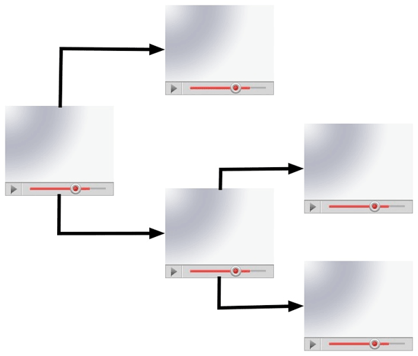
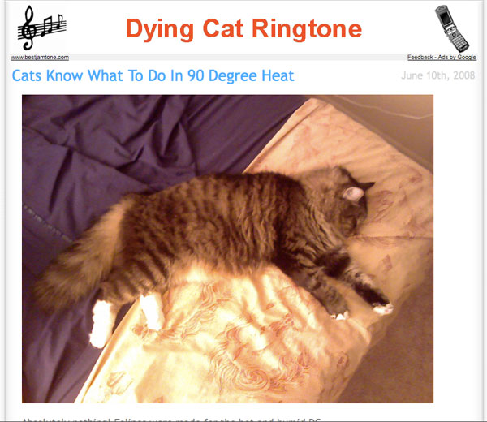
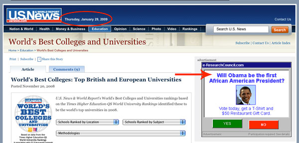
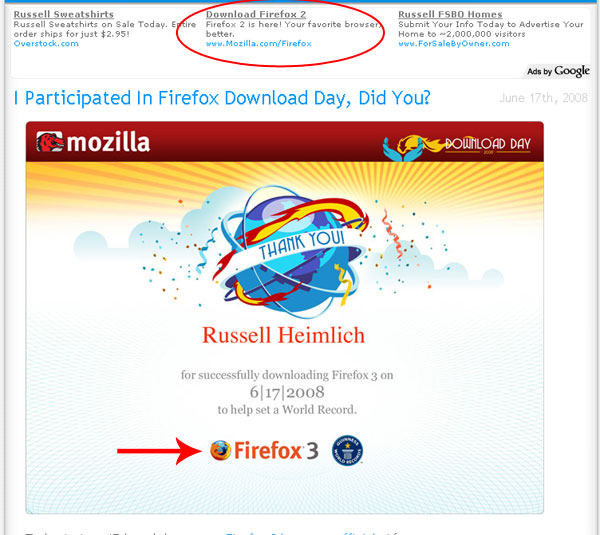
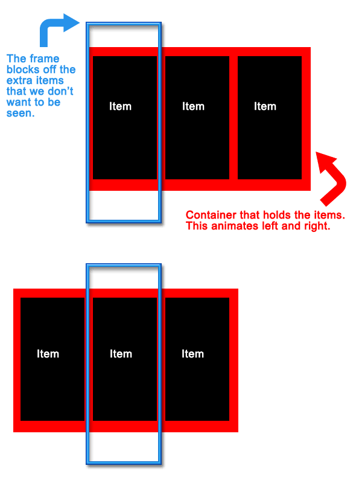
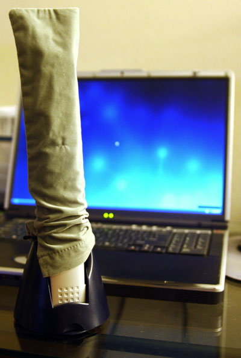
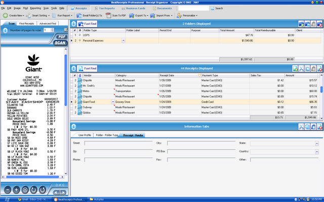

Yummy Easy To Make Snack
Kristina made this yummy pre-bedtime snack in a jiffy. Peanut buttered bread topped with banana slices and mini chocolate chips. Sounds weird, but it’s really good.

Kristina made this yummy pre-bedtime snack in a jiffy. Peanut buttered bread topped with banana slices and mini chocolate chips. Sounds weird, but it’s really good.
If you’ve heard of Twitter and haven’t seen this video I pity you.
Now go follow me.
Secret warhead right across the street from my apartment? Nope, just the water tower under renovation.

Waiting for my flight to Sacremento and watching the plane get prepped for take-off. The mountains here are huge and provide a pretty backdrop.
What does an open-source company do when they need to re-design their site? Open up the decisions to their community. Mozilla has reached out to Happy Cog Studios, noted for their WordPress interface revamp, to give Mozilla.org a makeover. Round 1 of the project is up at RedesignMozilla.org with three mock-ups ready for a critique from anyone who can fill in a comment form.
None of the designs really jump out at me. The 2nd concept tickles my fancy the most but the header is too big and lacks the focus on Mozilla’s projects which is what the Mozilla Foundation is all about. I guess what I like the most about concept2 is the colors. Concept3 seems a little too gimicky/amateur and concept1 is too bland.
Open-source is all about sharing and listening to feedback. When it comes to a redesign, the more feedback you can get the better. I wish we could do a community-involved redesign at work. I wonder what people would come up with?
(via Daniel Mall)
Always Innovating announced a new tablet/netbook hybrid today at the DEMO conference. What’s unique about this tiny notebook is the detachable tablet screen that has a magnetic backing so you can stick it to a refrigerator and turn it into an instant wall computer. Both the tablet half and the keyboard half have their own battery which is being touted to last for 10-15 hours. It is designed to be always on just like a cell phone and with 10 hours in between charges, it will probably surpass my T-Mobile Dash. Unlike most other netbooks on the market today, the Touch Book uses an ARM chip instead of a “power-hungry” Intel Atom processor.
The included operating system will be a Linux derivative developed by Always Innovating featuring a unique 3D UI. But since the device is open source, according to their FAQ you could “install many OSes on the device, including Google Android, Ubuntu, Angstrom and Windows CE, though we would not recommend the latter.” If it can run the gorgeous looking Jolicloud OS from Netvibes founder Tariq Krim then I’m sold. Who needs an Apple netbook anyway?
I don’t believe any of the tech media has had a chance for a hands on review, but I’m anxious if this device lives up to it’s hype. Coming in at $399 for the tablet and keyboard or $299 for just the tablet, this little ultra portable really piques my interest. It is expected to ship in May or June of this year but is available for pre-order now.
Speaking of ultra-portables, I was at a Microcenter over the weekend and I happened to see a Fujitsu LifeBook U820 . This thing was tiny! The dimensions are 6.73″ x 6.14″ with a 5.6″ screen. I had to squint to see my mouse cursor and the keyboard was just small enough for fat-finger mashing. Sometimes there is such a thing as “too small.” The scary thing is it runs Windows Vista Business. Pocketables.net has a good picture of it in use.
. This thing was tiny! The dimensions are 6.73″ x 6.14″ with a 5.6″ screen. I had to squint to see my mouse cursor and the keyboard was just small enough for fat-finger mashing. Sometimes there is such a thing as “too small.” The scary thing is it runs Windows Vista Business. Pocketables.net has a good picture of it in use.
Other coverage of the Touch Book:
NewTeeVee ran a post over the weekend about choose-your-own adventure videos on YouTube. The creators used the Video Annotation feature allowing them to place a link over a certain part of the video in order to string multiple clips together in a unique sequence. Through careful planning, an engaging, interactive experience can be created just like those old choose-your-own adventure books that were all the rage when you were a kid. Bboy Joker, a stop-motion animation film, is my favorite example of this genre.

I had a similiar idea for a DVD just before I went to college. I failed to act on it however due to the less than stellar experience navigating a DVD menu and the sheer idea of planning a comprehensive story with multiple plot branches. I’m more of a techno wizard than a storyteller. I vaguely remember reading about a professional DVD that pushed the boundaries of DVD interaction by including transparent cut-outs over live video so when you clicked one of them it would take you to a video glossary. I can’t seem to find the link, but it sounded like a ton of work just to author it back in the day.
Adding a bit of interactivity to video is better suited to the Internet, which is considered a lean-forward or engaging experience, as opposed to the traditional TV which is a lean-back or passive experience. While this format isn’t applicable to most of the videos published on the web, for the ones where it does work, it takes the experience to a whole new level.
Advertising that uses an algorithm to determine what is relevant to the content can have it’s interesting side-effects. Take these three screenshots I have collected over the past couple of months for example.

Who would want a dying cat ringtone anyway? Plus how did Google know that Puck was lying down playing dead?

Note: The election happened on November 4th, nearly 3 months earlier.

A post about the release of Firefox 3 seems like a good place to advertise Firefox 2.
Kristina had been toying with the idea of her own website for a couple weeks now. However, this past weekend, she got around to comping one together. She has been fascinated with the eclectic desk style that seems popular these days. While she was busy in Photoshop, I was setting up the domain and basic file structure. Since it’s a small site, the preparation didn’t take long. In fact the most time consuming task involved cutting images up from the comp and organizing them. Coding was a snap. The site is a basic 3 column layout and most everything is an image.
Creating the carousel to page through her resume was a custom job that took me about 20 minutes using jQuery. I had hoped to just go out to the jQuery community and find a nifty carousel plugin that I could just drop in and be on my way. Unfortunately this wasn’t the case. While there were plenty of options out there, everything was over engineered and too rigid. Most require the content to be an unordered list but I was using a set of divs. This shouldn’t make a lick of difference as any jQuery selector could be used.
Carousel scripts are pretty basic. You need a set of items to rotate through, a container to hold the items, and a frame to mask off the ugly parts. Some basic styling is used to line the items up in a row. The container is given a postion of absolute so it can be freely moved left and right and a large width to hold all of the items inside. The frame needs the overflow property set to hidden to mask out the items that we don’t want the user to see. To pull off the animation we use jQuery’s handy animate() method for the left and right positioning of the container element. This lets us set a key point and jQuery will handle the interpolation from the current value to the key point. Attach this function to a next and previous button and you’re ready to go with your own custom carousel that works the way you want it to.

It was a lot of fun to create a brand new site from scratch without any legacy content or rigid CMS. Simple websites are fun! And if you haven’t checked out the fruits of both of our labors, then please immediately proceed to KristinaNaude.com.
I’ve detailed how I organize my bank statements before. But sorting through a month’s worth of receipts at once has become a real burden. Back in December Woot.com, the one item a day shopping site, had a Woot-off where a succession of products are available for an undisclosed period of time. A Neat Receipts scanner came up and I took the bait. But it wasn’t until last week that I actually started using it.
came up and I took the bait. But it wasn’t until last week that I actually started using it.
And boy am I sorry that I didn’t start using this product earlier. It is a snap to scan a receipt, have the software read the contents of the receipt using OCR, and file them away in a database. In the box you get a USB-powered scanner, the software that does all the heavy lifting, a calibration card, a carrying case incase you take the scanner with you on the go, and a stand for propping the scanner up when you’re not using it (see below).

Setting up the scanner was a snap. First install the software and scanner driver then connect the scanner to your computer using the included USB cable. The first time you run the Neat Receipts software it will ask you to calibrate the scanner using the calibration card. Between when I opened the scanner box and the time I actually started using the Neat receipts system I had lost the calibration card. Luckily it’s not vital. You can print out your own replacement card using a standard inkjet printer. During first scan I put the receipt in face-up. When I saw the result, I was confused as it was completely white. It turns out you have to scan the receipt face down. The scanning processis really snappy as demonstrated in this video.
After you scan a receipt, the software will analyze the text and fill in the appropriate fields like vendor, date, sales tax, and price. The accuracy was pretty spot on. I only had to correct info for a few receipts. One problem I ran into is the software doesn’t share info from other receipts. For example you can enter address information from the receipt into the database. If you always shop at the same grocery store, NeatReceipts doesn’t automatically fill in this information from the first time you entered it. This seems like it would be a no-brainer to implement.
The software is clunky but fairly easy to learn. The main functions include viewing your scanned receipts, fields to enter information about the receipt, folders to categorize your receipt collection, and a search field for finding specific receipts.

The folder organizer works just like any file system: drag and drop. I don’t really understand why you might need more than 3 folders or so. One of the real advantages is the receipts are fully searchable. Any receipt can instantly be brought up with a simple search. This is the main advantage of the whole system.
If you need to export your receipts you have multiple formats. Any receipt, or group of receipts, can be exported as a PDF, Excel spreadsheet, or Quicken/QuickBook/ TurboTax file. I was hoping you could easily export all of your scanned receipt images to Quicken to embed with the appropriate transactions. Both programs know the date and how much the transaction was making it a snap to match up. But alas, exporting to Quicken only includes the financial information to enter as transactions. This is useless to me as my financial transactions are automatically downloaded from my bank over the Internet. Exporting the receipt info to Excel is easy with their spreadsheet mapping tool which lets you match which fields go to which columns in your spreadsheet.
It is important to backup your database with their backup tool which lets you save a single file to a safe location. One of the downsides of the Neat Receipts scanner is all of the information is stored in a proprietary .nr file. This means you will need to keep a copy of the software around if you ever want to view it later. This certainly isn’t a problem now, but 10 years down the line it might be.
So after getting everything up and running the Neat Receipts scanner has made my life much easier. Every night Instead of throwing my days receipts into an envelope I scan them into my computer. If I ever think I might need the phyical copy I’ll stash it away, otherwise my receipts end up in my trash can. After stapling my receipts to my bank statements for the past two years, I realized I’ve never needed to go back to one. This way I have everything saved and searchable in digital space rather than cluttering up physical space. Add the fact that I can pull up any receipt with a simple search query and I’ll never go back to organizing little papers by hand.